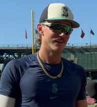
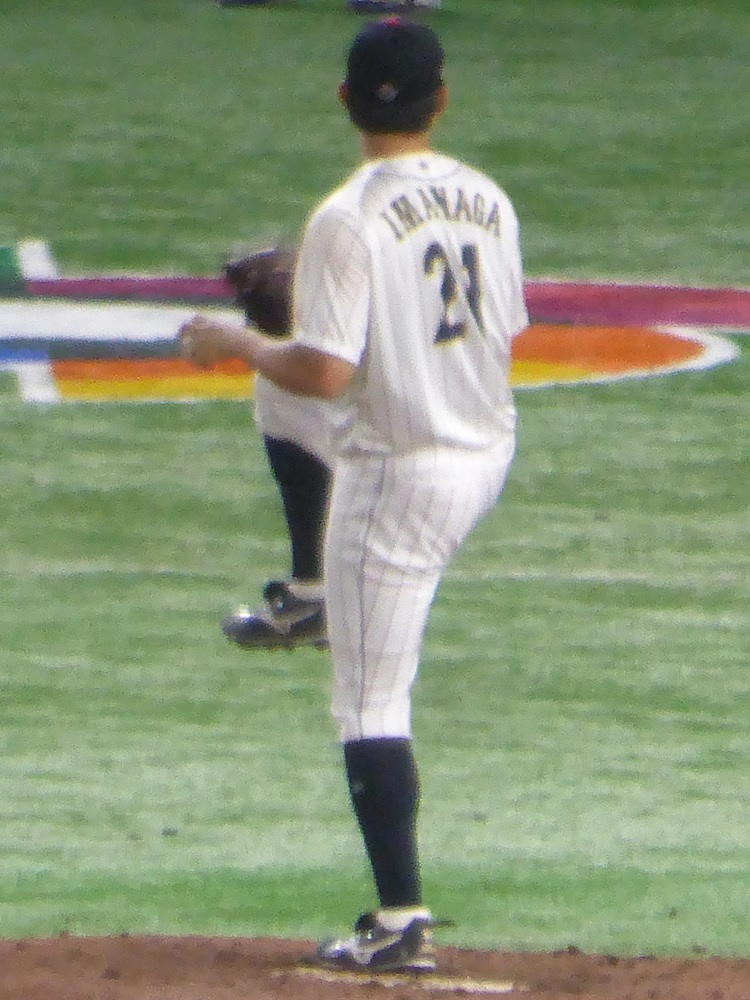

The Seattle Mariners are 62-68. They have scored 511 runs and allowed 555, a run differential of minus 44, and they are the worse team on the field this afternoon by every season long measure anyone keeps. They are also plus money at home against a Chicago Cubs club that is 74-56 and plus 98. One position is posted on this game, it is one unit, and the entire case for it fits inside two numbers that live on the same team page.
Seattle's pitching staff has a 3.35 ERA at T-Mobile Park and a 4.68 ERA everywhere else. That is the bet.
| Play | Odds | Stake | Game |
|---|---|---|---|
| Seattle Mariners moneyline | +106 | 1 unit | CHC at SEA, 4:10 PM ET |
One play, one unit at risk, logged on the BetLegend record at TrustMyRecord as ticket 4849. Fifteen games are on the schedule today and fourteen of them are being passed. The +106 is the price the ticket was taken at. The DraftKings number on the board this morning was +102, and the difference between those two prices is a larger share of this argument than it looks.
Start by stripping the juice out. Seattle is +102 and Chicago is -117 on the same board. The Mariners at +102 imply 49.51 percent, the Cubs at -117 imply 53.92 percent, and the two sum to 103.42 percent because the book keeps the difference. Normalize and the market's honest opinion of Seattle is 47.87 percent.
Convert 47.87 percent back into a price and you get about +109. That is the fair number. The ticket is on at +106 and the screen this morning read +102, so the shopped price is three cents short of fair and the board price is seven cents short of it.
That is a harder bet to make and it should be sized accordingly. It is one unit, not three, and the reason is written in the paragraph above rather than in a confidence level.
The split is not subtle. Seattle has played 64 games at home and 66 on the road. At home the staff has allowed 232 runs, which is 3.63 a game, on a 3.35 ERA. On the road it has allowed 323 runs, 4.89 a game, on a 4.68 ERA. Same pitchers, same season, a gap of 1.26 runs per game depending on which building they walk into.
| Seattle 2026 | Home | Road |
|---|---|---|
| Record | 35-29 | 27-39 |
| Team ERA | 3.35 | 4.68 |
| Runs allowed per game | 3.63 | 4.89 |
| Runs scored per game | 3.83 | 4.03 |
| Team OPS | .680 | .690 |
Read the bottom half of that table before the top half, because it is the part that keeps this honest. Seattle's offense is not better at home. It scores 3.83 a game at T-Mobile Park against 4.03 on the road and its OPS is ten points worse there. Whatever the building does, it does it to both sides of the ball, and a bettor who buys the home split is buying run prevention and accepting a worse offense as part of the package.
That is exactly the shape of a low total. The market has this game at 7.5, tied for the lowest number of the eleven games the board carries today, and a 7.5 in a park that has already turned a 4.68 road ERA into a 3.35 home one is a market that agrees with the venue and prices the teams anyway.

Bryce Miller, the Seattle starter this afternoon, carries a 1.04 WHIP across 89.2 innings. The photograph is from July 2024.
Miller's season reads better than anything Chicago is sending out. He has made 15 starts, thrown 89.2 innings, and carries a 3.71 ERA with a 1.04 WHIP. He strikes out 8.73 per nine and walks 1.81 per nine, which is the cleanest strikeout to walk profile in this game by a wide margin, and opponents are hitting .225 against him.
His last four starts are a different pitcher. Twenty one innings, sixteen earned runs, a 6.86 ERA over that stretch, and a home run allowed in every single one of them.
| Date | Opponent | IP | ER | K | BB | HR |
|---|---|---|---|---|---|---|
| July 31 | Minnesota | 5.1 | 2 | 3 | 2 | 1 |
| August 6 | Detroit | 5.0 | 4 | 5 | 2 | 1 |
| August 12 | New York Yankees | 6.0 | 5 | 5 | 1 | 1 |
| August 18 | Milwaukee | 4.2 | 5 | 3 | 2 | 1 |
Four starts is four starts and the season number is built on fifteen of them, so the honest reading is that the recent run is small sample noise sitting on top of a good year. The part that is not noise is the home run. Miller has given up 15 in 89.2 innings, a rate of 1.51 per nine, and four of those 15 came in this most recent stretch. A pitcher who lives in the strike zone at 1.81 walks per nine is a pitcher who gets hurt by the swing rather than by traffic, and one swing is how a 3.63 run home environment stops mattering.
Shota Imanaga has been the steadier pitcher this season by volume. Twenty five starts, 143.1 innings, a 3.77 ERA, a 1.09 WHIP, 8.79 strikeouts per nine and 2.01 walks per nine. Those lines and Miller's are close enough that a market pricing this game off the starters alone would land near a coin flip, which is roughly where it landed.
The separation is the home run. Imanaga has allowed 29 in 143.1 innings, 1.82 per nine, against Miller's 1.51. In his last four starts he has given up seven home runs in 22.1 innings, a rate of 2.82 per nine, including three in 4.2 innings against Washington on August 11.

Imanaga has allowed 29 home runs in 143.1 innings this season. The photograph is from the 2023 World Baseball Classic, before he signed in Chicago.
Here is the caveat that has to go next to that, because it undercuts the tidy version of this argument. Seattle's staff has allowed 75 home runs in 64 home games and 74 in 66 road games. The park is not suppressing home runs for them this season in any measurable way. Whatever is producing the 1.33 run ERA gap, it is not showing up in the home run column, and anyone selling this game as a fly ball pitcher walking into a home run graveyard is selling something the data on this team does not support.
What the split does support is everything else. Balls in play, extra base hits that die on the warning track instead of splitting a gap, the sequencing that turns three singles into one run instead of two. Those are the mechanisms that produce a 1.26 run per game difference without moving the home run count, and they are worth roughly a coin flip's worth of price against a better team.
The Cubs are 74-56 and that record is real. They have scored 665 runs and allowed 567, a plus 98 differential that is 142 runs better than Seattle's, and they are 36-29 away from Wrigley, which is a genuinely good road record rather than the usual contender's soft one.
They are also 4-6 in their last ten and have lost three straight, and their staff has allowed 195 home runs on the season against Seattle's 149. Those are the two facts that keep this from being a pure fade of a good team. Neither one is large. A three game losing streak in August is a coin landing the same way three times, not a diagnosis, and it is not being offered here as one.
One unit on a 62-68 team at +106 because the building it plays in has taken 1.33 runs off its staff ERA all season and the market is charging almost nothing for that. The devig says the number is three cents short of fair. The split says the market is pricing two teams and giving the venue less credit than its own season long record says it deserves.
Both of those can be true, and the size reflects it. If this were a price edge it would be three units. It is a thesis, so it is one.
Fact manifest
- The single posted position: Seattle Mariners moneyline at +106 for 1 unit of risk, ticket 4849 on the BetLegend record at TrustMyRecord, recorded at 5:47 PM UTC on August 23, 2026
- BetLegend card for August 23, 2026 as posted to the TrustMyRecord ledger. The +106 is an entry price on a position taken, not a live price feed. The TrustMyRecord ledger grades against the board price at submission, which was +102
- Board prices for Chicago Cubs at Seattle Mariners, DraftKings, last updated 5:43 PM UTC on August 23, 2026: Seattle moneyline +102 and Chicago -117; Seattle +1.5 at -175 and Chicago -1.5 at +145; game total 7.5 with Over and Under both at -110
- TrustMyRecord market board endpoint for baseball_mlb, pulled this session. The board carried 11 of today's 15 scheduled games at the time of the pull
- The 7.5 total is tied with Atlanta at Milwaukee for the lowest number among the 11 games the board carried for today
- Same board pull, filtered to games with an August 23 first pitch
- Standings through games of August 22, 2026: Seattle 62-68 on 511 runs scored and 555 allowed for a minus 44 differential, 6-4 in the last ten, winners of two straight, 35-29 at home and 27-39 on the road; Chicago 74-56 on 665 scored and 567 allowed for a plus 98 differential, 4-6 in the last ten, losers of three straight, 38-27 at home and 36-29 on the road
- MLB Stats API standings endpoint, 2026 season, pulled this session
- Seattle home and road splits: 245 runs scored and 232 allowed in 64 home games on a 3.35 team ERA, 78 home runs hit and 75 allowed, .680 team OPS; 266 scored and 323 allowed in 66 road games on a 4.68 team ERA, 70 home runs hit and 74 allowed, .690 team OPS
- MLB Stats API team stat splits endpoint for the Seattle Mariners, 2026 season, home and away situation codes, pulled this session. Per game figures are direct arithmetic on those totals
- Team pitching totals: Seattle 4.01 ERA, 1.23 WHIP, 149 home runs allowed; Chicago 4.15 ERA, 1.26 WHIP, 195 home runs allowed
- MLB Stats API team season pitching endpoint for both clubs, pulled this session
- Probable starters and 2026 season lines: Bryce Miller 15 starts, 89.2 innings, 3.71 ERA, 1.04 WHIP, 8.73 strikeouts per nine, 1.81 walks per nine, 15 home runs allowed, .225 opponent average; Shota Imanaga 25 starts, 143.1 innings, 3.77 ERA, 1.09 WHIP, 8.79 strikeouts per nine, 2.01 walks per nine, 29 home runs allowed, .230 opponent average
- MLB Stats API probable pitchers hydrate on the 2026-08-23 schedule plus 2026 season pitching splits for each player, pulled this session
- Last four starts for each: Miller 21.0 innings and 16 earned runs for a 6.86 ERA with a home run in each outing; Imanaga 22.1 innings, 10 earned runs and seven home runs for a 2.82 home run per nine rate, including three home runs in 4.2 innings at Washington on August 11
- MLB Stats API game log endpoint for both players, 2026 season, pulled this session. Rate figures are direct arithmetic on the logged innings
- Devig outputs: Seattle +102 implies 49.51 percent, Chicago -117 implies 53.92 percent, the pair sums to 103.42 percent, and Seattle normalizes to 47.87 percent, which is a fair price of about +109. Break even at the posted +106 is 48.54 percent and at the board +102 is 49.51 percent
- Direct arithmetic on the DraftKings prices listed above, using two way proportional normalization. That normalization is a convention and not a measurement
- Fifteen game schedule for August 23, 2026 with Chicago at Seattle at 4:10 PM Eastern
- MLB Stats API schedule endpoint for 2026-08-23, pulled this session
- Bryce Miller photograph from July 2024 and Shota Imanaga photograph from the 2023 World Baseball Classic
- Wikimedia Commons, CC BY 3.0 by The Couch GM and CC0 respectively, mirrored into the Sports Betting Prime image library this session
The play, its price and its stake are the author's own posted position. It records a bet taken, not a price feed, and books may show different numbers at the time you read this.
What is not checked, and cannot be:
- The ATLAS v1 team total model did not run for this card. No model projection appears anywhere on this page, and none was used to select or size the position.
- No ticket count or money percentage split was pulled. Nothing here describes where public or professional money went. Sports Betting Prime stopped publishing consensus data on July 21, 2026 and has not resumed it.
- No line movement history was pulled. Every price here is either the entry price on a posted position or a single board snapshot taken this morning. No claim is made about where the number opened.
- Only one book is quoted. The +106 and the +102 come from two different shops and no survey of the wider market was run, so the fair price derived here rests on one pair of DraftKings prices.
- Lineups had not posted when this was written. Late scratches, bullpen availability, rest days and weather all postdate this page.
- No park factor was calculated. The home and road split quoted here is a raw team split for one season and it carries the schedule inside it: who Seattle happened to play at home versus on the road is not controlled for anywhere on this page, and 64 games is not a large sample for a 1.33 run ERA gap.
- The mechanisms offered for that split, balls in play dying short and sequencing, are not measured here. The home run counts are measured and they show no home park effect at all, which is stated above rather than hidden.
- No bullpen usage, rest or availability data was pulled for either club, despite late innings being where a one run home edge would show up.
- Chicago's own home and road splits were not pulled. Only the road record is quoted, and a record is not a run environment.